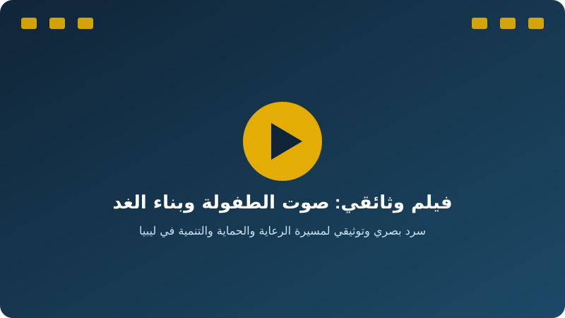

سيناريو وسرد تفصيلي مقسم إلى مشاهد زمنية مع إمكانية القراءة الصوتية المباشرة داخل المتصفح.

تبدأ اللقطات بإشراقة الصباح وحركة الحياة اليومية في المدينة، تتداخل مع أصوات الأطفال وضحكاتهم البريئة. يقول الراوي: "في قلب كل مجتمع حيّ، تقف الطفولة بوصفها المقياس الحقيقي للحاضر والبوصلة الأصدق للمستقبل. ومن هنا جاءت رسالة المجلس الأعلى للطفولة؛ لتكون مظلة جامعة للرعاية والحماية والتنمية."
تنتقل الكاميرا إلى المدارس والفضاءات العامة والملفات الإدارية والأرشيفية التي توثق الجهود المبذولة. يقول الراوي: "لم تكن حماية الطفولة يوماً مجرد شعارات عابرة، بل مسؤولية يومية تتطلب رؤية واضحة، ومتابعة دقيقة، وتنظيماً مؤسسياً يربط القرار بالعمل الميداني، ويحفظ كل وثيقة ومراسلة كجزء من ذاكرة العمل والواجب."
مشاهد تبرز الأنشطة التعليمية والثقافية والاجتماعية، واهتمام المشرفين والفرق الفنية والإدارية بتوفير بيئة آمنة ومستقرة. يقول الراوي: "حين نمنح الطفل الأمان، والتعليم الجيد، والإنصات الحقيقي، فإننا لا نبني فرداً فحسب، بل نرسّخ قيم الرحمة والتضامن والوعي في نسيج الوطن بأكمله."
تختتم المشاهد بلقطة واسعة مضيئة تعكس الأمل والاستمرارية. يقول الراوي: "سيبقى المجلس الأعلى للطفولة منبراً للعمل الجاد، وجسراً يجمع بين التوثيق الدقيق والرسالة الإنسانية النبيلة؛ لأن الاستثمار في الطفولة هو الاستثمار الأبقى والأكثر نبلاً في تاريخ الشعوب."